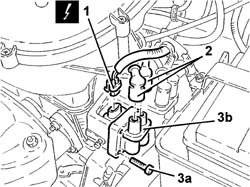
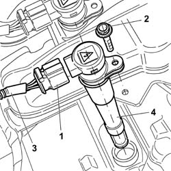
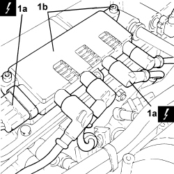

5510C14 ignition coil/s - r+r
- Path
- Procedures > 55 ELECTRICAL EQUIPMENT > 5510 ENGINE IGNITION > 5510C coil, ecu, sensors > 5510C14 ignition coil/s - r+r
- Kind
- repair procedure (removal / refitting; the operation number is the code)
- Applies to
- engines: 1.2 8v, 1.4 8v, 1.6 16v; all production periods
- Interactive page
- https://sloeber94.github.io/elrnDB-fDbl/en/#/2584899
Applies to: engines: 1.2 8v; all production periods
 Removing
Removing
 Refitting
RefittingDisconnect the negative battery terminal.
1. Disconnect the ignition coil electrical connection.
Description | Connector | |
|---|---|---|
1 | ignition coils |
2. Disconnect the spark plug leads from the ignition coil.
3. Undo the fixing bolts (3a) and remove the ignition coil (3b).
Proceed in the same way for the remaining ignition coil.

Applies to: engines: 1.2 8v; all production periods
Refitting
RemovingRefit the ignition coil and secure with bolts.
Connect the spark plug leads to the ignition coil.
Connect the ignition coil electrical connection.
Description | Connector | |
|---|---|---|
- | ignition coils |
Connect the negative battery terminal.
Applies to: engines: 1.6 16v; all production periods
Removing
RefittingMake sure that the ignition key is in the OFF position, then disconnect the negative battery terminal.
Description | Connector | |
|---|---|---|
- | Battery |
1. Disconnect the electrical connections for the ignition coils.
Description | Connector | |
|---|---|---|
1 | ignition coils |
2. Unscrew the bolts securing the ignition coil to the air intake chamber.
3. Release the electrical wiring from the retaining band.
4. Remove the ignition coil/reels.

Applies to: engines: 1.6 16v; all production periods
Refitting
RemovingPosition the ignition coil/reels.
Tighten the bolts fixing the ignition coils/reels.
Secure the wiring to the collars on the cam cover.
Connect the electrical connections for the ignition coils.
Description | Connector | |
|---|---|---|
- | ignition coils |
Connect the negative battery terminal.
Description | Connector | |
|---|---|---|
- | Battery |
Applies to: engines: 1.4 8v; all production periods
Removing
RefittingOp. 1048A10 AIR FILTER ASSEMBLY - R.R.
- Disconnect the negative battery terminal.
1. Disconnect the electrical connections (1a), undo the bolts and remove the ignition coils (1b).
Description | Connector | |
|---|---|---|
1a | Ignition coil |

Applies to: engines: 1.4 8v; all production periods
Refitting
Removing- Place the ignition coils back in their housings, connect the electrical connections and tighten the bolts to the recommended torque.
Value daNm | Fastening | Component | dia | |
|---|---|---|---|---|
- | 0.8 ÷ 1.0 | Bolt | Ignition coils | M6 |
- Connect the negative battery terminal.
Topics linked from this page (4)
- 1048A10 air cleaner filtering element - replace
- A001 BATTERY
- A030 IGNITION COIL
- A30 IGNITION 'COIL ( ENGINE )
Topics that link to this page (22)
- Z54 MISFIRE ERROR IN ONE CYLINDER
- 1016A20 single cam cover - r + r and replace gasket
- 1016B20 lh cylinder head extension - replace gasket
- 1016B24 rh cylinder head extension - replace gasket
- 1016C10 cylinder head - r + r and replace gasket
- 1020D12 front crank shaft oil seal cover - r + r and replace seals
- 1020D14 front crank shaft oil seal cover - r + r and replace seals for versions with oil pump on crank shaft, timing side
- 1020D18 front crank shaft cover oil seal - replace
- 1032B10 toothed timing belt - r + r for timing adjustment or replacement
- 1032B14 toothed timing belt - r + r for timing adjustment or replacement versions with air conditioner
- 1032B46 toothed drive pulley - r + r
- 1032B52 toothed driven pulley (one) - r + r
- 1032B60 bolt pulley - r r
- 1032B62 TIMING BELT TOOTHED PULLEY - R.R. FOR VERSIONS WITH AIR CONDITIONING
- 1032C18 mobile timing system tensioner - r + r for 24 valve engines
- 1032D34 timing system guard assemblies - r + r
- 1036B10 overhead camshaft - r r on vehicle
- 1036C39 PHASE TRANSFORMER ON INLET CAMSHAFT IN CYLINDER HEAD - R.R.
- 1036H14 valve tappets - check clearance
- 1036H18 VALVE TAPPETS - Adjust. following clearance check
- 1088C10 water pump - r + r
- 5510D10 spark plugs - r+r